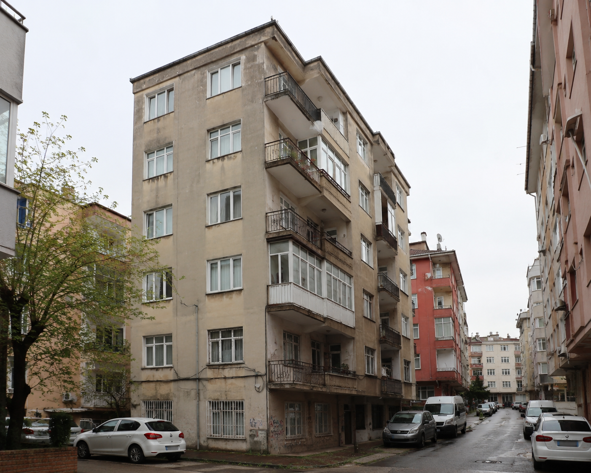

Kentsel Dönüşüm Süreci
Eski binadan yeni teslim edilen modern yapıya kadar tüm aşamaları adım adım görüntüleyin.

1 / 9 - Eski Bina
Yenibosna sokak içinde mevcut eski bina.
1Eski Bina
2Dönüşüm Afişi
3Yıkım
4Moloz Kaldırma
5Temel Atımı
62 Kat Kaba İnşaat
75 Kat Kaba İnşaat
8Dış Cephe
9Tamamlanmış Proje